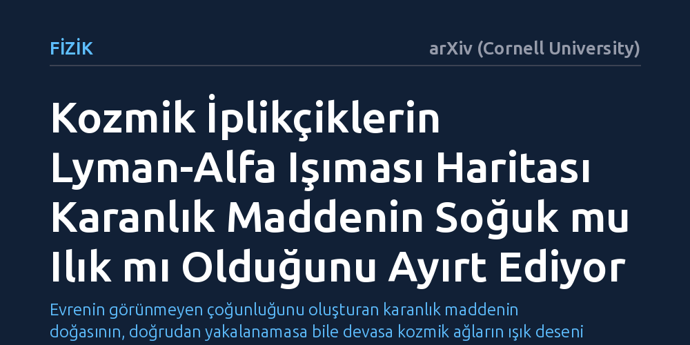

FIZIK · arXiv (Cornell University) · 2026-09-08
Araştırmacılar, evrendeki gaz köprüleri olan kozmik iplikçiklerin yaydığı Lyman-alfa ışımasının karanlık maddenin türünü belirleme potansiyelini inceledi. Bulgular, soğuk karanlık maddenin topaklı, ılık karanlık maddenin ise çok daha pürüzsüz yapılar üreterek iki kozmolojik modelin birbirinden kesin biçimde ayırt edilmesini sağladığını gösterdi.
Evrenin görünmeyen çoğunluğunu oluşturan karanlık maddenin doğasının, doğrudan yakalanamasa bile devasa kozmik ağların ışık deseni incelenerek çözülebileceğini gösteriyor.

Evrendeki toplam kütle-çekim etkisinin yaklaşık yüzde seksen beşini oluşturan karanlık madde, astrofiziğin en büyük çözülmemiş sırlarından biridir. Standart kozmoloji modelimiz olan Lambda Soğuk Karanlık Madde (LCDM), bu parçacıkların yavaş hareket eden ve 'soğuk' yapıda olduğunu varsayar. Bu model, evrenin büyük ölçekli yapısını açıklamakta son derece başarılı olsa da, cüce galaksilerin sayısı ve galaksi merkezlerindeki yoğunluk gibi küçük ölçekli gözlemlerde bazı teorik açmazlarla karşılaşmaktadır.
Bu açmazları aşmak için bilim insanları, parçacıkların biraz daha hızlı hareket ettiği 'ılık karanlık madde' alternatifini geliştirdiler. Ancak soğuk ve ılık karanlık madde modelleri, evrenin genel yapısına bakıldığında birbirine son derece yakın sonuçlar üretir. Hangi modelin gerçeği yansıttığını doğrudan gözlemlerle test etmek ve bu iki yaklaşımı birbirinden ayırmak bugüne kadar çözülmesi zor bir problem olarak kaldı.
Galaksiler uzay boşluğunda rastgele dağılmaz; birbirlerine 'kozmik iplikçikler' adı verilen devasa gaz ve karanlık madde köprüleriyle bağlıdır. Bu iplikçikler, evrenin büyük ölçekli iskeletini yani kozmik ağı oluşturur. İplikçiklerin içinde yer alan seyrek hidrojen gazı, evrendeki ışık kaynaklarıyla uyarıldığında 'Lyman-alfa' adı verilen ve spektroskopik olarak tespit edilebilen karakteristik bir ışıma yayar.
Araştırmacılar, bu iplikçiklerden gelen zayıf Lyman-alfa sinyallerinin haritalanmasının karanlık maddenin doğasını ele verip veremeyeceğini sorguladı. İki farklı karanlık madde senaryosu altında gazın iplikçiklerde nasıl toplandığını ve bu gazın uzaya saçtığı ışımanın morfolojisini kozmolojik modelleme ve simülasyon yöntemleriyle incelediler.
Çalışmanın ortaya koyduğu en kritik bulgu, karanlık maddenin türünün iplikçiklerin iç yapısında belirgin bir morfolojik fark yaratmasıdır. Standart soğuk karanlık madde modelinde kozmik iplikçikler yüksek derecede topaklı ve küçük alt yapılarla doludur. Buna karşılık, ılık karanlık madde modelinde parçacıkların serbestçe yayılabilme özelliği küçük ölçekli dalgalanmaları sildiğinden, iplikçikler çok daha pürüzsüz ve daha az karmaşık bir yapı sergilemektedir.
Bu yapısal fark, iplikçiklerdeki hidrojen gazından yayılan Lyman-alfa ışımasının haritasına doğrudan yansımaktadır. Soğuk karanlık madde parlaklıkta kesintili ve topaklı lekeler bırakırken, ılık karanlık madde pürüzsüz ve kesintisiz ışıma desenleri üretir. Böylece hidrojen ışımasının uzaysal dokusu, doğrudan karanlık maddenin doğasını ele veren güçlü bir tanı aracına dönüşür.
Bu bulgu, henüz doğrudan bir laboratuvar dedektöründe yakalanamayan karanlık maddenin niteliğini uzaydaki devasa yapıların ışığıyla test etmek için somut bir yol haritası sunmaktadır. Gelecek nesil yer ve uzay teleskopları, derin evren gözlemleriyle kozmik iplikçiklerin Lyman-alfa haritalarını çıkardığında, iplikçiklerin topaklı mı yoksa pürüzsüz mü olduğunu doğrudan ölçebilecektir.
Yine de bu çalışma teorik bir modelleme adımıdır ve nihai bir kanıt için gözlemsel doğrulama gerektirmektedir. İplikçiklerden gelen ışımanın son derece sönük olması ve hidrojen gazının astrofiziksel süreçlerden nasıl etkilendiği, gözlemlerle modellenmesi gereken zorlu sınırlar arasında yer almaktadır.